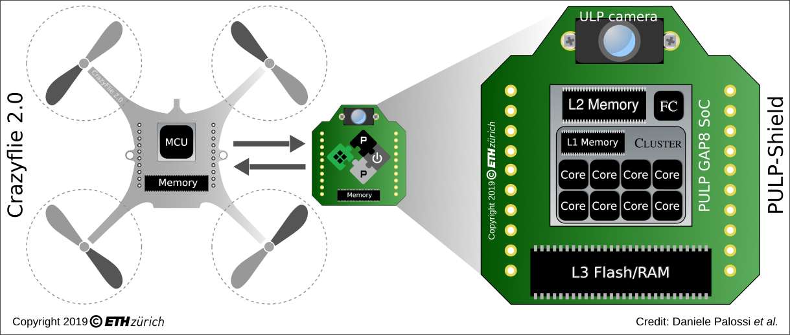
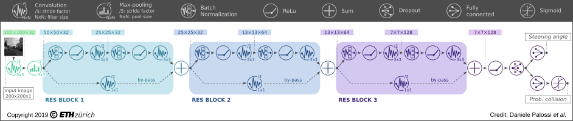

写在前面
边缘计算：边缘计算（Edge Computing）指将数据的处理、应用程序的运行甚至一些功能服务的实现，由网络中心下放到网络边缘的节点上。
我们今天要介绍的是 低功耗的边缘计算，这允许我们在更轻量级的物联网设备上完成更复杂的计算任务，实现更灵活的功能。
我们选择的平台是开源的微型无人机 Crazyflie，基于 Crazyflie 背后团队最新推出的低功耗边缘计算扩展板 AI-deck 来运行我们的边缘计算实例。
Crazyflie
Crazyflie 是来自瑞典的 Bitcraze 公司开发并生产的重量仅有 30g 的 微型无人机，项目完全开源并且提供软硬件工具给用户来建构其生态。

硬件
Crazyflie 微型四轴飞行器的硬件设计得非常优秀，不管是 PCB 机械层的轮廓设计、信号层上元器件的布局还是整个电路板的走线都非常合理，而且最重要的是 Bitcraze 团队将模块化的理念带入到 Crazyflie产品的设计之中，这使得 Crazyflie 微型四轴除了基本的飞行功能之外，还可以通过堆叠不同扩展板的方式来实现不同功能的扩展。
软件
Crazyflie 微型四轴飞行器的软件开发全部基于 Linux 开发环境，并使用已有开源且强大的软件工具（比如 ARM-GCC，Make、PyQt 等）进行开发。除此之外，Crazyflie 微型四轴飞行器的软件源码还被托管在 GitHub 上，非常方便世界各地的爱好者、研究者对其进行二次开发。
文档
除了以上两点有关技术层面的优势，Crazyflie 微型四轴飞行器项目还有一个非常优秀的地方——丰富的文档。作为一家不以盈利为主要目的团队任然可以将自己的开源项目文档写得如此详细，他们这种乐于分享的精神实在是值得我们学习。
AI-deck
基本信息
用途：边缘计算
重量：只有 30g
组成：
- GAP8 Ultra-low power 8+1 core RISC-V IoT Application Processor
- Himax HM01B0 – Ultra low power 320×320 Bayer RGB camera.
- 512 Mbit HyperFlash and 64 Mbit HyperRAM
- ESP32 for WiFi and more (NINA-W102)
- 2 x Cortex-M 10-pin JTAG for GAP8 and ESP32
- Button connected to ESP32 for UART bootloader or other action
- 1 x green LED connected to GAP8 (A2)
- 1 x green LED connected to ESP32 (GPIO_24)
- Can work stand alone. Power board on VCOM
板子上有GAP8和NINA两块芯片，以及分别的调试接口。
GAP8是一款基于RISC-V的物联网处理器芯片，用于完成AI计算任务。
NINA是一款以ESP32芯片为核心的WiFi模组，用于完成图像传输。
- 存在的主要问题：AI-deck尚处早期研发，挑战与机遇并存
PULP-DroNet
AI-deck 来自于一个叫 PULP-DroNet 的项目。AI-deck 基于 PULP-DroNet 项目开发的 PULP-Shield 开发板，进行了适当的改进。
介绍
PULP-DroNet 是一个由深度学习驱动的 视觉导航引擎，帮助微型无人机在未知的环境中进行自主导航。得益于 PULP-DroNet，微型无人机可以完全自主地探索环境，避免与移动障碍物发生碰撞。无需人工操作，无需临时外部信号，也无需远程笔记本电脑！这意味着所有复杂的计算都可以直接在飞机上快速完成。
PULP-DroNet：PULP-Shield + DroNet
Software
- Based on DroNet: a shallow convolutional neural network developed by RPG
Hardware
- Based on PULP (Parallel Ultra-Low-Power) GAP8 SoC (System on Chip) from GreenWaves Technologies
- an ultra-low power HiMax HBM01 camera
- off-chip Flash/DRAM memory
缩写
- PULP：Parallel Ultra-Low-Power 并行超低功耗
- GWT：GreenWaves Technologies 一家芯片公司，生产了 GAP8 这款 PULP 的 SoC
术语
- PULP-Shield：与 Crazyflie 兼容的可插拔的 PCB，上面搭载 PULP GAP8 SoC 或 PULP Mr.Wolf SoC
- PULP Virtual Platform：一个软件模拟环境，在自己的电脑上运行程序，模拟程序运行在 PULP SoC 上的效果
- Autotiler：一个软件工具，作为lib.a发布。它会生成一些为了编译PULP-DroNet所需要的 c 文件。
- GAPuino board：GWT Arduino 兼容的开发板，其中包括 PULP GAP8 SoC。
发展历史

PULP-DroNet 基于 ETHZürich 和博洛尼亚大学设想的 并行超低功耗（PULP）项目。
- 功率低至几毫瓦
- 应用在先进 IoT 节点，智能传感器，当然还有 微型无人机
- 对诸如相机之类的传感器生成的数据流进行灵活，高级的处理，而这超出了典型微控制器的能力
- 硬件基于 RISC-V 架构，可替代同为 RISC 的 ARM，开源
第一步是开发 PULP-Shield（可以认为是 AI-Deck 早期的原型产品）
使用的是 PULP GAP8 SoC （GAP8 是 PULP 项目的第一个商用版本）
9 RISC-V-based cores
- an on-chip microcontroller (1 core, called Fabric Ctrl)
- a cluster accelerator of 8 cores
64 kB L1 memory
512kB L2 memory
接下来选择基于DroNet的高级人工智能算法作为自主导航引擎的算法核心
- 因为资源受限，对 DroNet 进行了一些改进，输出碰撞概率和转向角两条信息，最后转换成 前进速度 和 转角率 (angular yaw rate) 用于控制无人机。

相关资料
- Github - PULP-DroNet
- A 64mW DNN-based Visual Navigation Engine for Autonomous Nano-Drones（arxiv文章关于上面提到的如何将 DroNet 移植到功率受限的 CF 上）
- PULP Platform，Youtube
准备
硬件配置
微型无人机：Crazyflie 2.1
边缘计算扩展板：AI-deck
与扩展板 AI-deck 进行通信/程序烧录的 Debugger：Olimex ARM-USB-TINY-H JTAG
用于连接 Debugger 与 AI-deck 的转接器：ARM JTAG 20 to 10 pin adapter
用于连接 Debugger 与 PC 的 USB 线：CABLE USB A-B 1.8M
与 Crazyflie 进行通信/程序烧录的 USB Dongle：Crazyradio PA 2.4 GHz USB dongle
设备 3 提到的 debugger 有多种选择，但官方示例选用的是 olimex 的这款，为了避免不必要的麻烦，推荐在设备选择方面 follow 成功案例，从而专心软件开发。

接线方式即烧录方式有两种选择。
- ① Flash based on JTAG (wired): 使用设备 3-5 以有线方式通过 OpenOCD 基于 JTAG 与 AI-deck 进行通信。
- ② Flash using Crazyradio PA (wireless): 使用设备 6 以无线方式基于蓝牙与 Crazyflie 进行通信。
软件环境
Virtual Machine
- AI-deck 需要用到 GAP8 SDK，该 SDK 只提供了 Ubuntu 版本
- 所以这里推荐安装 Bitcraze Virtual Machine
- 需要预先安装 Oracle VirtualBox
GAP8 & NINA
从官方商店购买的设备应该是已经烧录好了相应的firmware，但是我们从第三方购买的没有烧录，需要自行烧录。下面的实践环节会详细介绍。
实践
Step 1: 下载官方示例项目
1 | git clone https://github.com/bitcraze/AIdeck_examples.git |
AIdeck_examples 项目为我们准备的几个示例程序的固件源码，以及使用 Docker 以最便捷的方式安装 AI-deck 开发所需要的两大软件依赖（NINA 芯片需要的 ESP-IDF，GAP8 芯片需要的 GAP8-SDK）
Step 2: 安装 ESP-IDF 并烧录 NINA 芯片
- 下载 Docker 镜像
工作目录：AIdeck_examples/NINA/firmware/
1 | docker build --tag espidf:3.3.1 . |
- 烧录
工作目录：AIdeck_examples/NINA/firmware/
接线连接：Debugger 连上 AI-deck 上 NINA 芯片对应的 JTAG 接口
Step 3: 安装 GAP8
- 获取 Docker
1 | export GAP_SDK_VERSION=3.5 |
- 安装 autotiler
1 | docker run --rm -it gapsdk:${GAP_SDK_VERSION} /bin/bash |
这里会让填个邮箱，输一个 URL https://greenwaves-technologies.com/autotiler/
- 提交修改
1 | export GAP_SDK_VERSION=3.5 |
Step 4: 更新 Crazyflie 自身固件
以下操作在 crazyflie-firmware 项目中完成（我们所使用的虚拟机里已经有该项目）
- 更新项目
1 | git pull |
- 激活 AI-deck
- 进入
/firmware/tools/make/ - 创建新文件 config.mk
- 新增一行
1 | CFLAGS += -DDECK_FORCE=bcAIDeck |
- 无人机进入 bootloader 模式，烧录程序
- 按无人机启动按钮 2s 进入 bootloader 状态
- 使用 Flash using radio 烧录新固件
了解更多有关虚拟机使用以及烧录硬件的内容可以参考 Programming the Crazyflie
Step 5: 烧录人脸检测程序
进入
AIdeck_examples/GAP8/image_processing_examples/FaceDetection/编辑 Makefile，取消注释
USE_STREAMER，USE_CAMERA执行烧录命令
1 | sudo docker run --rm -it -v $PWD:/module/data/ --device /dev/ttyUSB0 --privileged -P gapsdk:${GAP_SDK_VERSION} /bin/bash -c 'export GAPY_OPENOCD_CABLE=interface/ftdi/olimex-arm-usb-tiny-h.cfg; source /gap_sdk/configs/ai_deck.sh; cd /module/data/; make clean all image flash' |
Step 6: 大功告成
此时我们已经完成了全部的软件准备工作，可以运行查看结果啦！
启动无人机，会有一个 WiFi 热点叫 Bitcraze AI-deck example
PC 连接该热点
进入
AIdeck_examples/NINA/执行
python3 viewer.py程序启动一个图形界面，成功看到 AI-deck 上的摄像头回传的画面
成功啦！会有一个黑色框框圈中人脸
有用的链接
- AIdeck_examples - Github：AIdeck 项目的官方仓库，里面有更详细的 doc 来介绍每一个步骤，包括在引入 Docker 之前是如何一步步手动安装软件环境的。我也为这个项目的文档贡献了一些改进内容！嘿嘿~😜
- Olimex Debugger User’s Manual：我的一个学习笔记，对 Debugger 官方手册内容的一个中文版的翻译与总结。
- AI-deck - Bitcraze Store：官方商城里的 AI-deck 介绍页，更多细节可以在此找到。
- AI-deck - Bitcraze Blog：官方博客有关 AI-deck 的内容，可以了解到 AI-deck 诞生前后的故事。
- AI-deck - Bitcraze Forum：官方论坛的 AI-deck 板块，我也在这里问过不少问题。